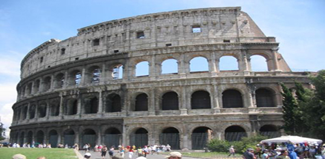
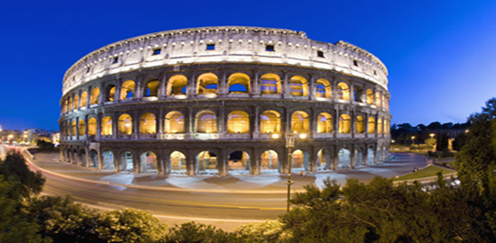
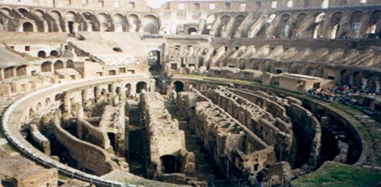
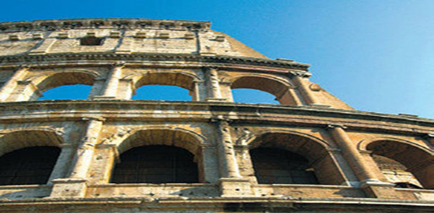
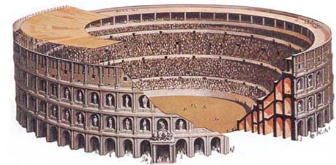
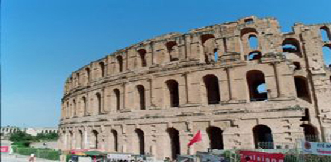
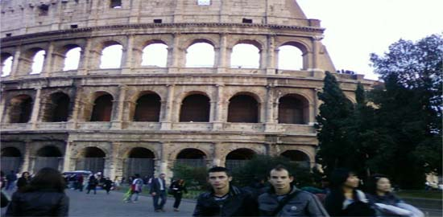

|







Колизеумът (на латински Colosseum) е най-пространният и
най-великолепният от амфитеатрите в Древен Рим, започнат от Веспасиан и
завършен 80 г. от Тит.
Той се издига в Рим, близо до двореца на Нерон, „Domus Aurea“, който е
построен след опожаряването на Рим през 64 г. Името Колизеум му е било
дадено към 8 век, заради намиращия се до него Неронов колос. Тази статуя
е реконструирана по-късно от наследниците на Нерон и е превърната в
статуя на Сол, богът на Слънцето, след като е добавена подходяща
слънчева корона.
Археологическите проучвания доказват, че мястото около Колизеума е
населявано от републиканския период насам, като има предположения и за
по-ранни времена. Намерени са останки от множество сгради от тази епоха,
намиращи се близо и около амфитеатъра. Известно е, че тези сгради са
били иззети и разрушени след 64 г., когато Нерон решава да изгради там
своята резиденция, заедно с изкуствено езеро и много вътрешни сгради и
градини, за които черпим информация главно от древните автори.
Говори се, че най-зрелищните стадиони и развлекателни съоръжения на
света са повлияни от конструкцията на Колизея. Местата за сядане (cavea)
са разделени на няколко части. Подиумът (podium), първата част, е
предназначена за римските сенатори. Ложата на императора, направена
изцяло от мрамор, също е в тази част. Над подиума се намира maenianum
primum, част предвидена за останалите римски аристократи, които не
участват в сената. Третото ниво, maenianum secundum, е разделено на три
подчасти. Най-ниската (immum) е за богати граждани, докато най-високата
(summum) – за бедни. Третата, дървена част (maenianum secundum in
legneis), е най-горе, построена от Домициан, пригодена за „жени от
най-нисък клас“. Вътре местата за сядане (cavea), изградени изцяло от
травертин, сега са почти загубени. Част от пода на арената е зидан, а
другата част е направена от дърво. Има мраморни украшения около подиума,
по коридорите (vomitoria) и може би на нишите до главните входове на
арената.
След първите две години от пускането на Колизеума, по-младият син на
Веспасиан, бъдещият император Домициан, заповядва изграждането на
подземия (hypogeum). Това е двуетажна подземна мрежа от тунели и клетки
под арената, където са държани гладиаторите и животните преди началото
на зрелищата. Множество тайни врати и входове предоставят лесен достъп
до арената на животните и части от декорите, скрити в подземията. Голяма
платформа, наречена hegmata, предоставя достъп на слонове и други
огромни животни до арената. Под арената са помещенията, нужни за
представленията. Когато в амфитеатъра имало диви зверове, около подиума
се спускала предпазна ограда. Оградата имала дървени остриета на върха,
за да не позволява на зверовете да се покатерят по нея. Местата за
сядане (cavea) имат наклон от 37 градуса, с височината от 48,5 m, като
дори най-горните редове имат добър изглед към арената.
Днес нивото на арената вече не съществува, но стените на подземията и
коридорите са видими в руините на сградата. Цялата конструкция заема
площ от 160 000 кв.метра.
|